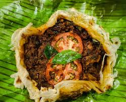

Kizhi Porotta

Kerala Style Chicken Sacked within Porotta
As the name suggests, this parotta is filled with chicken. But that's not only it; this variety of parotta is
made in a banana leaf. Kizhi in Tamil and Malayalam literally means to 'tear.' So, with this, you can certainly
imagine the texture of this delicious parotta! Since this parotta is tied and prepared in a banana leaf, the
parotta soaks the flavour of chicken, making it even more irresistible to have! You can make this yummy parotta
at home and impress your family with your cooking skills! Find the full recipe below:
Ingredients
- Parotta – 6 nos
- Onions – 1 nos big
- Curry leaves – a sprig
- Coriander leaves – 2 tblsp
- Banana leaves – 1 big
- Coconut oil – 1 tsp.
- Chicken – ½ kg - FOR MARINATION
- Chilli powder – 1 tsp - FOR MARINATION
- Turmeric powder – ¼ tsp - FOR MARINATION
- Pepper powder – 1 tsp - FOR MARINATION
- Garam masala – 1 tsp - FOR MARINATION
- Salt – for taste - FOR MARINATION
- Ginger garlic onion paste – grind 5 pods garlic, ½” ginger, ½ onion to fine paste. - FOR MARINATION
- Onion – 2 nos ( big) - FOR MASALA
- Cumin – 1 tsp - FOR MASALA
- Garlic ginger paste - 1 tsp - FOR MASALA
- Turmeric powder – ¼ tsp - FOR MASALA
- Coriander powder – 1 ½ tsp - FOR MASALA
- Chilli powder – 1 tsp - FOR MASALA
- Garam masala – 1 tsp - FOR MASALA
- Fennel powder – 1 tsp - FOR MASALA
- Tomatoes – 2 nos ( medium sized) - FOR MASALA
- Curry leaves – a sprig - FOR MASALA
- Green chillies – 2 nos. - FOR MASALA
- Salt for taste. - FOR MASALA
- Coconut oil – 2 tsp - FOR MASALA
Steps
- Marinate marinating ingredi Add tomatoes and saute till mushy.ents with chicken and let it rest for 30 mins.
- Chop onions, tomatoes to small pieces.
- Cut banana leaves to big size pieces and show in medium flame till it changes colour, keep it aside till use
(this will prevent leaves from tearing)
- In a wide vessel add marinated chNow add masala powders, turmeric powder, coriander powder, chilli powder,
garam masala, fennel powder and saute for a minute.icken , ½ cup water and let it boil till chicken is half
cooked or 75% , strain the chicken water ( stock ) and keep it aside.
- Heat coconut oil in pan , add cumin, followed by onions, ginger garlic paste, salt and saute till raw smell
leaves and onions turn brown.
- Now add masala powders, turmeric powder, coriander powder, chilli powder, garam masala, fennel powder and
saute for a minute.
- Add tomatoes and saute till mushy.
- At this stage add chicken stock water and boil for 2 minutes till masala blends with stock water well.
- Once it starts boiling add chicken , curry leaves, green chillies , mix well and boil till chicken cooks to
soft and tender. Remove from flame.
- Place one parotta in banana leaf , layer with chicken masala, curry leaves, coriander leaves, onion slice,
another parotta and top with a full ladle full of masala again.
- Cover the leaf and tie a knot at top.
- Heat dosa tawa, add 1 tsp coconut oil, place the package , close pan and boil for 10 to 15 mins in medium
flame.
- Remove from flame , open and enjoy hot spicy kizhi parotta.
Home